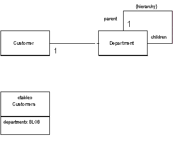

| Home | Articles | Talks | Links | Contact Me | ISA | ThoughtWorks |
Save a graph of objects as by serializing them into a single large object (LOB) and store the LOB in a database field.

Object models often contain complicated graphs of small objects. Much of the information in these structures is not the objects but the links between the objects. Consider storing the organization hierarchy for all your customers. An object model would quite naturally show the composition pattern to represent organizational hierarchies. You can easily add methods that allow you to get ancestors, siblings, descendents and other common relationships
Putting all this into a relational schema, however, get's more awkward. The basic schema is simple, an organization table with a parent foreign key. However manipulation of the schema requires many joins, which is both slow and awkward.
Objects don't have to be persisted as table rows related to each other. Another form of persistence is serialization, where a whole graph of objects is written out as a single field in a table, this field then becomes a form of memento.
There are two ways you can do the serialization: a binary (BLOB) or as textual characters (CLOB). The BLOB is often the simplest to create since many platforms include the ability to automatically serialize an object graph. Saving the graph is then simply a matter of applying the serialization into a buffer and saving that buffer into the relevant field.
The advantages of the BLOB is that it's simple to program (if your platform supports it), and it uses the minimum of space. Your database, of course, must support a binary data type to support this. Also you have to live with the fact that you can't reconstruct the graph without the object, so the field is utterly impenetrable to casual viewing. The most serious problem to concern with, however, is versioning. If you change the department class, you may not be able to read all the previous serializations of that class; since data can live in the database for a long time, this is a serious problem.
The alternative is a CLOB. In this case you serialize the department graph into a text string which carries all the information you need. The text string can be read easily by a human viewing the row - which helps in casual browsing of the database. However the text approach will usually need more space and you may need to create your own parser for the textual format you use. It's also likely to be slower than a binary serialization.
Much of these disadvantages for CLOBs can be overcome by using XML. XML parsers are commonly available, so you don't have to write your own. Furthermore since XML is a widely supported standard, you can take advantage of tools that become available to do further manipulations. The disadvantage that XML does not help with is the matter of space. Indeed it makes the space issue much worse wince XML is a very verbose format. One way to deal with that is to use a zipped XML format as your BLOB. That loses the direct human readability, but is an option if space really is an issue.
When you're using Serialized LOB beware of identity problems. Say you wanted to use Serialized LOB for the customer details on an order. For this don't put the customer LOB in the order table, otherwise the customer data will be copied on every order, which makes updates a problem. (This is actually a good thing, however, if you want to store a snapshot of the customer data as it was at the placing of the order - avoiding temporal relationships.) If you want your customer data to be updated for each order in the classical relational sense, you need to put the customer LOB in a customer table so many orders can link to it. There's nothing wrong with a table that just has an id and a single LOB field for its data.
In general you need to be careful of duplicating data when using Serialized LOB. Often it's not a whole Serialized LOB that gets duplicated, but part of a Serialized LOB that overlaps with another one. The thing to do is to pay careful attention to the data that's stored in the Serialized LOB and be sure that this data cannot be reached from anywhere but a single object that acts as the owner of the Serialized LOB.
Serialized LOB isn't considered as often as it might be. Using XML makes it much more attractive since it yields a easy to implement textual approach.
The main disadvantage of the LOB is that you can't query the structure using SQL. SQL extensions are appearing to get at XML data within a field, but that's still not the same (or portable).
Serialized LOB works best when you can chop a piece of the object model out and represent the LOB. As such think of a LOB of a way to take a bunch of objects that aren't likely to be queried from any SQL route outside the application. This graph can then be hooked into the SQL schema.
Serialized LOB works poorly when you have references from objects outside the LOB into objects that are buried in the LOB. To handle this you have to come up with some form of referencing scheme that can support references to objects inside a LOB. While this is by no means impossible, it is awkward. Awkward enough to usually be not worth doing. Again XML, or rather XPATH, reduces this awkwardness somewhat.
If you are using a separate database for reporting and all other SQL goes against that database, then you can transform the LOB into a suitable table structure. The fact that a reporting database is usually denormalized means that structures that are suitable for Serialized LOB are often also suitable for a separate reporting database.
For this example we'll take the notion of customers and departments and show how you might serialize all the departments into an XML CLOB. The object model of the sketch turns into the following class structures
class Customer... private String name; private List departments = new ArrayList();
class Department... private String name; private List subsidiaries = new ArrayList();
The database for this has only one table.
create table customers (ID int primary key, name varchar, departments varchar)
We'll treat the customer as an Active Record and illustrate writing the data with the insert behavior.
class Customer...
public Long insert() {
PreparedStatement insertStatement = null;
try {
insertStatement = DB.prepare(insertStatementString);
setID(findNextDatabaseId());
insertStatement.setInt(1, getID().intValue());
insertStatement.setString(2, name);
insertStatement.setString(3, XmlStringer.write(departmentsToXmlElement()));
insertStatement.execute();
Registry.addCustomer(this);
return getID();
} catch (SQLException e) {
throw new ApplicationException(e);
} finally {DB.cleanUp(insertStatement);
}
}
public Element departmentsToXmlElement() {
Element root = new Element("departmentList");
Iterator i = departments.iterator();
while (i.hasNext()) {
Department dep = (Department) i.next();
root.addContent(dep.toXmlElement());
}
return root;
}
class Department...
Element toXmlElement() {
Element root = new Element("department");
root.setAttribute("name", name);
Iterator i = subsidiaries.iterator();
while (i.hasNext()) {
Department dep = (Department) i.next();
root.addContent(dep.toXmlElement());
}
return root;
}
The customer has a method for serializing its departments field into a single XML DOM. Each department also has a method for serializing itself (and its subsidiaries recursively) into a DOM. The insert method then just takes the DOM of the departments, converts it into a string (via a utility class) and puts it into the database. We aren't particularly concerned with the structure of the string. It's human readable, but we aren't going to look at it on a regular basis.
<?xml version="1.0" encoding="UTF-8"?> <departmentList><department name="US"><department name="New England"><department name="Boston" /> <department name="Vermont" /></department><department name="California" /> <department name="Mid-West" /></department><department name="Europe" /></departmentList>
Reading back is a fairly simple reversal of the process.
class Customer...
public static Customer load(ResultSet rs) throws SQLException {
Long id = new Long(rs.getLong("id"));
Customer result = (Customer) Registry.getCustomer(id);
if (result != null) return result;
String name = rs.getString("name");
String departmentLob = rs.getString("departments");
result = new Customer(name);
result.readDepartments(XmlStringer.read(departmentLob));
return result;
}
void readDepartments(Element source) {
List result = new ArrayList();
Iterator it = source.getChildren("department").iterator();
while (it.hasNext())
addDepartment(Department.readXml((Element) it.next()));
}
class Department...
static Department readXml(Element source) {
String name = source.getAttributeValue("name");
Department result = new Department(name);
Iterator it = source.getChildren("department").iterator();
while (it.hasNext())
result.addSubsidiary(readXml((Element) it.next()));
return result;
}
The load code is obviously a mirror image of the insert code. The department knows how to create itself (and its subsidiaries) from an XML element, and the customer knows how to create the list of departments from an XML element. The load method uses a utility class to turn the string from the database into a utility element.
An obvious danger here is that someone may try to edit the XML by hand in the database and mess up the XML making it unreadable by the load routine. More sophisticated tools that would support adding a DTD or XML Schema to a field as validation would obviously help with that.
 |  |